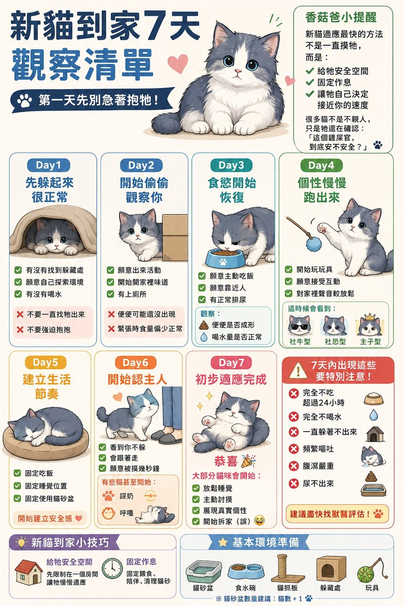

新貓到家 7 天第一天先別急著抱
FIRST 7 DAYS
新貓適應最快的方法
新貓適應最快的方法
不是一直摸牠
給牠安全空間、固定作息、讓牠自己決定靠近你的速度 ~ 很多貓不是不親人，只是還在確認你
每日觀察紅燈訊號環境準備
01
一張圖看懂 7 天

🔍 點圖片可以放大看
02
每天看什麼
點開每一天
Day 1先躲起來 很正常第一天不要急著抱›
看：有沒有找到躲藏處、願意自己探索、有沒有喝水
✕ 不要一直把牠找出來 ✕ 不要強迫抱抱
✕ 不要一直把牠找出來 ✕ 不要強迫抱抱
Day 2開始偷偷觀察你牠在確認這裡安不安全›
看：願意出來活動、開始聞家裡的味道、有上廁所
便便可能還沒出現、緊張時食量偏少 都正常
便便可能還沒出現、緊張時食量偏少 都正常
Day 3食慾開始恢復記錄吃喝拉撒›
看：願意主動吃飯、願意靠近人、有正常排尿
觀察：便便是否成形、喝水量是否正常
觀察：便便是否成形、喝水量是否正常
Day 4個性慢慢跑出來社牛、社恐還是主子型›
看：開始玩玩具、願意接受互動、對家裡聲音比較放鬆
Day 5建立生活節奏開始有安全感›
看：固定吃飯、固定睡覺位置、固定使用貓砂盆
這時候固定作息最重要
這時候固定作息最重要
Day 6開始認主人›
看：看到你不躲、會跟著走、願意被摸幾秒鐘
有些貓甚至開始踩奶、呼嚕
有些貓甚至開始踩奶、呼嚕
Day 7初步適應完成 🎉›
大部分貓咪會開始：放鬆睡覺、主動討摸、展現真實個性、開始拆家（誤）
每隻貓的速度不一樣 ~ 有的兩天就黏人，有的要兩三週，慢不代表有問題，只要吃喝拉撒正常，就給牠時間。
03
7 天內出現這些 要特別注意
!
完全不吃超過 24 小時
貓不能餓太久 ~ 拖久了可能引起其他問題
!
完全不喝水
可以先試試濕食，還是不喝就要就醫
!
一直躲著完全不出來
連吃飯上廁所都不出來，要找原因
!
頻繁嘔吐、腹瀉嚴重
幼貓特別容易脫水，不要等
!
尿不出來
一直進貓砂盆卻尿不出來，是急症，要馬上就醫
04
迎接之前 先準備好
🚪先給一個房間空間小一點反而比較有安全感，適應了再開放全家
📦躲藏處紙箱、貓窩都可以 ~ 讓牠有地方躲是給牠安全感
🚽貓砂盆數量建議：貓的數量 ＋ 1
💧食碗水碗放在離貓砂盆遠一點的地方
🪵貓抓板給牠可以抓的地方，沙發才保得住
🧶玩具逗貓棒是建立關係最好的工具
NEXT
📋送貓前要確認的 6 件事帶回家之前先問清楚›
🐾看懂貓咪身體語言牠躲起來、尾巴豎起來 是什麼意思›
🧭我家貓有狀況 先看哪裡一直躲、不吃不喝、便便怪›
💬新貓到家 有問題問香菇爸第一次養貓很正常會緊張 ~ 傳訊息聊聊↗
還可以看這些
關於這一頁
每隻貓適應的速度不一樣，這份清單是常見的參考節奏
有任何紅燈訊號，或你覺得「怪怪的」，請先帶去給獸醫看
© 2026 香菇爸・原創內容